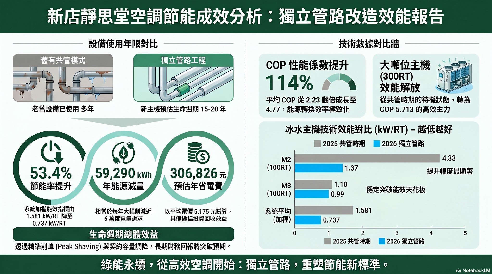

新北市 · 新店
2026 / 05

AI 效率分析報告 新店空調系統優化後效益量化
✓
EMS 冰機數據輸入 AI 模型，建立效能基線✓
量化優化前後 COP 值差異，提供決策依據✓
分析結果轉化為招標文件技術規格桃園
2026 / 05

AI 效率分析報告 桃園空調設備汰換後效益確認
✓
汰換前後 EMS 數據對比，AI 量化節能效益✓
以桃園成果為範本，擬定全省推展計畫✓
效能推估模型建立，供後續場域比較使用